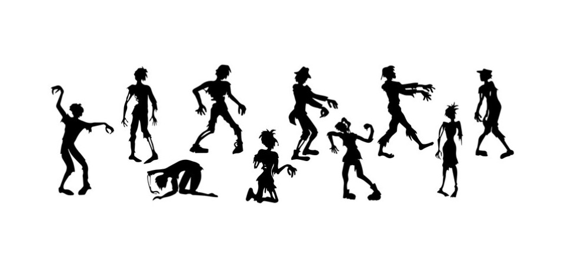

QUILL, uma aventura apocalíptica: 1ª Cena

⫸ O Jogo
- Sistema: QUILL, uma aventura apocalíptica
- Autora: Tainá Costa
- Disponibilidade: PDF no Grupo Solo RPG (Facebook)
Recentemente, descobri o RPG Solo QUILL, que tem uma proposta bem diferente. O objetivo não é explorar ou lutar, mas escrever uma carta.
Fiz uma partida rápida usando uma adaptação feita pela Tainá Costa e que está disponível no Grupo Solo RPG, no Facebook. Nesta adaptação, você está num mundo em que aconteceu um apocalipse zumbi e você precisa, obviamente, sobreviver. A adaptação ficou bem divertida, mesmo para mim que às vezes sinto um pouco de preguiça quando o tema é zumbis.
⫸ O Personagem
Seguindo as orientações para criação do Personagem, escolhi como arquétipo o Jogador. O personagem pronto ficou assim:
- Jogador (arquétipo): Um dia você estava se preparando para a grande final do campeonato regional e no outro estava lutando pela sua sobrevivência em um mundo infestado por mortos-vivos
- Linguagem: Média 3d6
- Coração: Bom 3d6
- Caligrafia: Pobre 1d6
- HabilidadeInspiração: +1d6 em testes de Linguagem.
- Regra: -1d6 em Testes de Caligrafia: Você está muito cansado e já não consegue mais raciocinar direito.
⫸ O1º Cenário: Em busca de um novo abrigo
Antes de cada parágrafo, coloquei os resultados dos testes que fiz. Entre [] estão as rolagens de dados e na frente, a pontuação que recebi.
- Linguagem: [Palavra Inferior/Palavra Superior] [Rolagens ] Pontuação
- Coração (Floreio): [Rolagens ] Pontuação
- Caligrafia: [Rolagens ] Pontuação
Objetivo
Você vai escrever uma carta para o líder da comunidade: Kevin Garcia, um ex delegado que nos dias atuais não confia em muitas pessoas. Você precisa passar confiança nas suas palavras para ser aceito no grupo, conte sua história, de onde você veio e o que fez para sobreviver até aqui. Boa sorte.
⫸ A carta que escrevi

- Linguagem: [Cabana/Abrigo] [2, 5 e 6] +1
- Coração (Floreio): [3, 5, 3] +2
- Caligrafia: [4] +0
Faz uma semana, se me lembro bem, que estou vagando por esta região. Estou exausto e preciso de um abrigo seguro, pois não sei se posso garantir minha segurança sozinho… Minhas forças já estão me deixando.
- Linguagem: [Salvo/Seguro] [2, 4, 1] +0
- Coração (Floreio): [] -
- Caligrafia: [6] +1
Não me sinto a salvo onde estou. É uma velha casa caindo aos pedaços. As paredes não podem me proteger por muito tempo. Sei que é pedir muito de alguém que não me conhece, mas preciso de ajuda.
- Linguagem: [Inferno/Apocalipse] [1, 4, 4] +0
- Coração (Floreio): [3, 4, 4] +0
- Caligrafia: [4] +0
Estou exausto e sem muitas forças, mas se me aceitar em sua comunidade, com um ou dois dias eu me recupero e posso ajudar de muitas formas, principalmente em trabalhos manuais. Não sei detalhes, mas imagino que estejam precisando de ajuda para sobreviverem a este inferno.
- Linguagem: [Chefe/Líder] [2, 2, 3] +0
- Coração (Floreio): [3, 1, 4] +0
- Caligrafia: [4] +0
Não me restam muitas opções. Aliás, não acho que me reste qualquer outra opção a não ser recorrer a você, chefe da comunidade, para pedir ajuda e me ajudar a sobreviver.
- Linguagem: [Durar/Sobreviver] [6, 6, 1] +1
- Coração (Floreio): [2, 4, 1]
- Caligrafia: [1] +0
Sobreviver é tudo que quero no momento. Já perdi família e amigos em meio a este apocalipse, mas não quero perder também minha vida. Sua ajuda é minha última opção!
⫸ Resultado
5 a 7 Pontos: apesar de entender sua situação, ele informa que não pode confiar em estranhos, pois existem muitas crianças e pessoas indefesas na cidade, de tal modo que não aceitaria um desconhecido vagando pelo vilarejo.